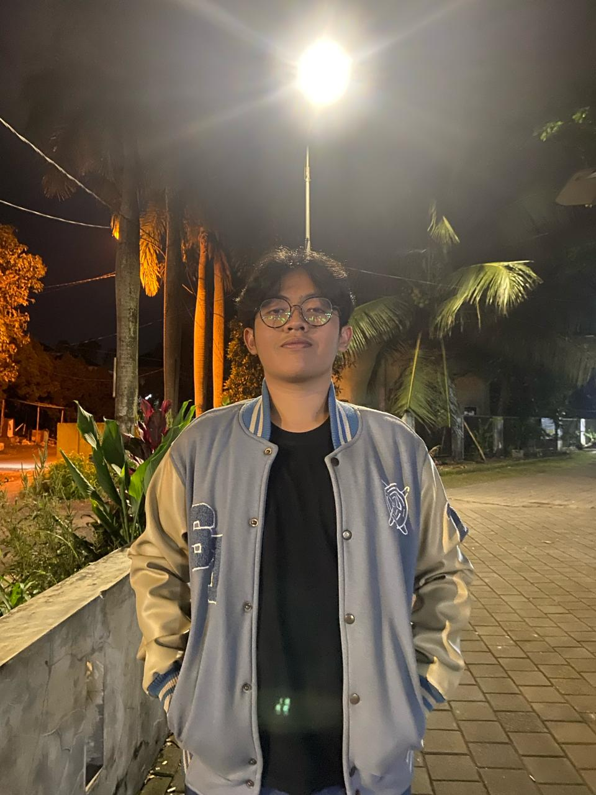
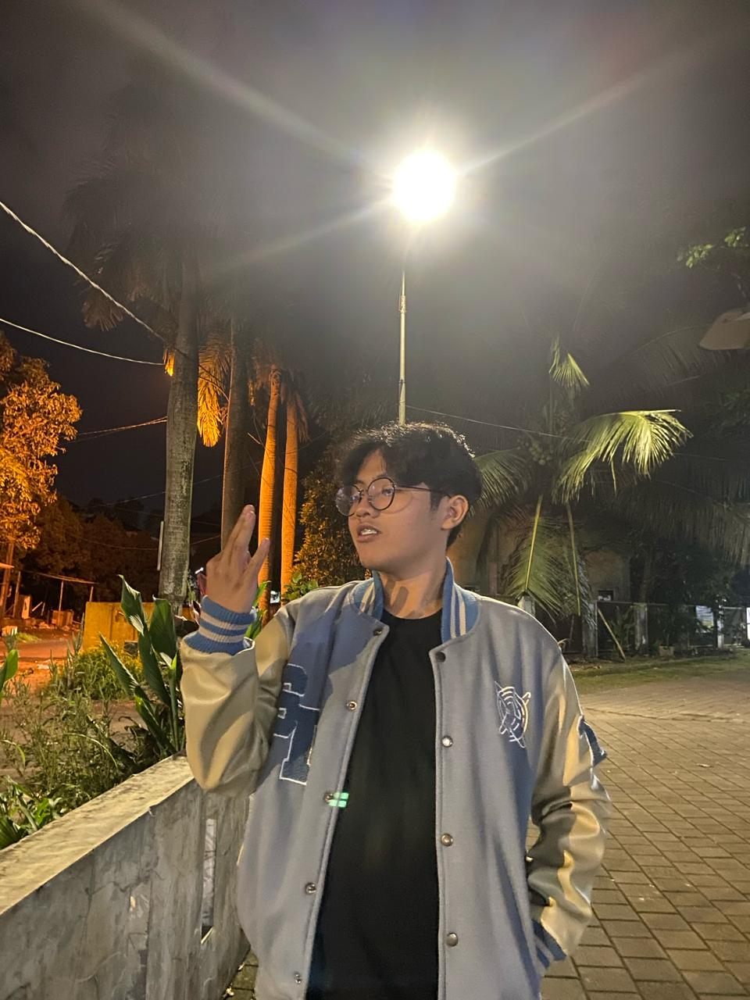

Halo, saya
Darrennala Sandeyamugni
Web Dev • Information Systems • Sports

Tentang Saya
Halo! Saya Darrennala Sandeyamugni, mahasiswa Sistem Informasi Universitas Siliwangi. Saya memiliki rasa ingin tahu yang sangat tinggi terhadap dunia IT, khususnya programming. Bukti nyata eksplorasi saya adalah keberhasilan membangun dan mendeploy website menggunakan stack PHP, MySQL, HTML, CSS, dan JavaScript secara mandiri.
Selain berkutat dengan kode, saya adalah pribadi yang aktif dan kompetitif. Saya menjaga kedisiplinan dan stamina fisik melalui olahraga rutin seperti basket, badminton, renang, dan berlari.

Fokus Utama
Web Development
Membangun website responsif dari front-end hingga manajemen database.
IT Project Management
Mengelola siklus proyek IT dengan memadukan aspek teknis dan operasional.
Leadership & Management
Memimpin tim, mengelola tata kelola organisasi, dan merancang strategi eksekusi.
Journey & Leadership
Badan Legislatif Mahasiswa (BLM) FT UNSIL
Feb 2026 - PresentAnggota Komisi II (Administrasi & Anggaran)
Bertanggung jawab atas pengawasan regulasi, tata kelola administrasi, dan pengelolaan anggaran kelembagaan di tingkat Fakultas Teknik.
Sivolution 3.0
2025Staf Dekorasi & Logistik (Deklog)
Mengelola operasional teknis, pengadaan barang, dan infrastruktur acara untuk memastikan kelancaran event tahunan (Dies Natalis) Sistem Informasi.
Magang HMSI (Himpunan Mahasiswa Sistem Informasi)
2025Staf Magang Divisi Minat & Bakat (Mikat)
Membantu perencanaan dan pelaksanaan program kerja untuk menyalurkan bakat mahasiswa, khususnya di bidang olahraga dan seni, selaras dengan minat pribadi saya.
P2M (Pengabdian pada Masyarakat) - HMSI
2025Staf Dekorasi & Logistik (Deklog)
Merancang distribusi logistik untuk kegiatan sosial di luar kampus dan memastikan fasilitas pendukung warga lokal tersedia dengan baik.
Mabim (Masa Bimbingan)
2025Staf Dekorasi & Logistik (Deklog)
Menyiapkan kebutuhan teknis dan properti orientasi guna menciptakan suasana edukatif yang teratur bagi mahasiswa baru.
Ombus SI (Orientasi Mahasiswa Baru Sistem Informasi)
2024Mentor / Pembimbing Maba
Mengarahkan mahasiswa baru dalam beradaptasi dengan budaya akademik dan menanamkan nilai-nilai kebersamaan di lingkungan jurusan.
Technical Exploration
Sammelanaasa Website
Proyek website personal yang saya bangun dari nol untuk mengimplementasikan manajemen database dan logika pemrograman server-side.
Live Project →Active Lifestyle & Skills
Let's Build Something.
Tertarik berdiskusi soal IT, legislatif kampus, atau hal lainnya? Saya selalu terbuka untuk koneksi baru.